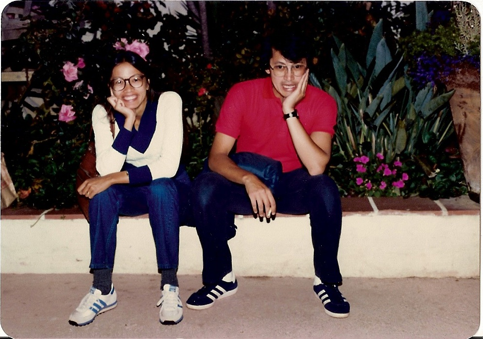
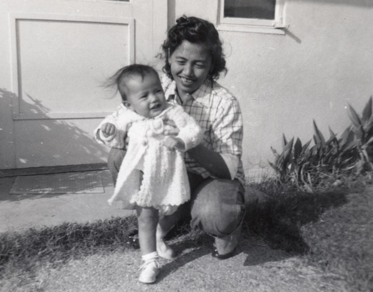

Estofado
Cooking time: 1 hr 45 min
- 2 lbs chuck roast cut in 1.5” cubes
- 2 tbsp olive oil
- 4 cloves minced garlic
- 1 small onion, sliced
- 1 tsp black pepper
- ½ cup soy sauce
- 1/3 cup Worcestershire
- 2 bay leaves
- 1 cup water
- 1 8-oz can tomato sauce
- ½ jalapeño, halved
- 1 cup whole black olives
- 1 4-oz can sliced mushrooms (pieces & stems)
- 8-oz canned sweet peas, drained
- 1 tbsp parmesan
On medium high heat, add olive oil to pot. Stir in garlic and onion. When onion is translucent, add chuck roast and black pepper. Cover for 35 minutes. Stir. Turn heat to high. Add soy sauce, Worcestershire, and bay leaves. Stir. Add water and tomato sauce. After it comes to a boil, turn to medium heat, cover, and cook for 30 minutes, stirring occasionally. Turn heat to low. Continue to cook for 30 minutes or until tender, covered, stirring occasionally.
Turn heat to medium. Add jalapeño, black olives, mushrooms, sweet peas, parmesan. Stir. Serve over rice.

Gulay
Cooking time: 30 minutes
- ¼ lb pork butt chopped in small pieces
- 2 cloves garlic, minced
- ¼ onion, sliced
- ½ lb green beans or asparagus, sliced in 1” pieces
- black pepper
- ½ cup chicken broth
- 2 tbsp soy sauce
- ½ cup shrimp juice
- 20 shrimps, tails removed
- tomato?
On medium high heat, brown pork butt in pan. Add garlic and onion. After they are cooked through, add vegetables. Season with black pepper. Stir to cook. Add chicken broth. Cook.
Add soy sauce. Cover and cook for 3 minutes on medium heat.
Add _______tomato?, stir.
Cover and cook for 5 minutes. Add shrimp juice. Add shrimp. Cook until shrimp are just done.

"I was in 9th grade, so Ed was in 10th. Dad sat Gene, Ed, and me on the green sofa in the living room. He pulled up a chair and sat in front of us.
He said, “Even though we are living in the United States, you will marry as follows: Gene will be first, then Ed, then Andy.”
‘well I guess I’m never getting married because Ed is bacla. Ed hit me. Then dad hit me.
“you will marry a roman catholic Filipino girl that is a virgin” I asked “well what if they lie to you?” “a Filipino catholic girl will not lie to you” then I laughed and Dad hit me again." - Andy

Chicken Adobo
Cooking time: 1 hour
- 2 chickens cut into pieces
- 4 cloves garlic, minced
- garlic salt
- 1/3 cup vinegar
- ½ cup soy sauce
- ½ tsp black pepper
- ½ tsp sugar
- ½ cup – 1 cup chicken broth
- 2 bay leaves
- 1 tbsp achiote (annatto), soaked in 2 tbsp water (used for color; optional)
- 1 tsp black peppercorns
- 1 tbsp cornstarch (optional)
Season chicken pieces with garlic salt and put in pot. Mix garlic, vinegar, soy sauce, pepper, sugar in a bowl. Pour mixture over chicken and stir. Put on stove over high heat. Bring to a boil then turn to medium.
Add bay leaves, strained liquid from achiote, peppercorns. Depending on how much sauce you’d like, add chicken broth. Bring to boil and let boil for 2 minutes. Stir. Turn heat to medium. Cover. Cook for 20 minutes.
Taste sauce and adjust soy sauce and vinegar accordingly. Turn heat to medium high. Cook uncovered or until chicken is tender.
If sauce is thin, take 3 tbsp of sauce and put it to a small bowl. Add cornstarch and make a slurry. Put the slurry back in the pot and stir. Cook for 1 minute more.
Serve over rice.

Biko
Cooking time:
Syrup:
- 3 19-oz cans Chaokoh coconut milk
- 1 lb dark brown sugar
- 1 lb light brown sugar
- 1 tbsp vanilla
- 1 tsp salt
- 1 tbsp butter
Combine coconut milk, dark brown sugar, light brown sugar, vanilla, salt, butter in a pot and bring to a boil. Simmer for 1 hour to reduce and thicken.
Rice:
- 7 cups sweet Rice
- 2 tbsp butter
- 1 tsp salt
Add rice to rice cooker. Cover with water to ¼” over the level of rice. Add butter and salt. Cook.
Reserve 1 cup syrup for topping. Add cooked rice to pot. Cook over medium heat for 30 minutes or until the mixture has become drier and pulls away from the sides of the pot. Spread the mixture in a buttered pan. Spread the topping over the top. Broil until brown.

"the year was 1972 and it was October. I went over to our house, just before they added on the addition. The fireplace was in the middle of the living room between the two walls and the piano was right next to that and I was sitting on the piano bench. Grandma was bringing in the dried clothes from the backyard through the sliding door – just to the right of the fireplace. Dad was sitting on the couch behind the Filipino coffee table. He was about 48 years old.
I was telling dad that I was getting married to a girl from st. louis whos dad was a Presbyterian evangelical minister and she already had a daughter. Dad said “you mean the checker at the commissary store?!” I said yes. And that’s when he got upset. He jumped over the coffee table and ran into Grandma who was bringing in the clothes. She cussed in tagalog and yelled: “what is wrong with you?!”
Dad came after me and I started running. I ran through the kitchen while trying to get my Volkswagen keys out of my jeans pocket. I’m running out the kitchen door and he picks up one of our little league bats and he starts ch.
I ran to the Anderson/McClure house house. And I ask the Mrs. Anderson if I can come through the hosue. She said sure come on through.
As I went around the entryway and around her sectional couch. I open up the sliding door and sceen door and close the screen door in back of me. Dad comes thourgh the front door unannounced and goes through the living room and crashes thorugh the screen door.
I’ve already climbed up onto a 4 foot retaining wall. Dad starts swigning at my feet and I jump off and so I jumped from the wall onto the frontyard grass.
Dad goes back throught the house to come after me. I still dindt have time to get to the vokswagen so I run down the street to a Winnebago and run around that with Dad chasing me in circles around the Winnebago 2-3 times.
I finally get to the Volkswagen and saw that my dad was losing air, so I turned around and said “you’ll never catch me you old man!”
And that’s when dad got his second wind and started catching me. I ran to my frien’ds house that was across mission village drive. I went with him and Keith to the beach and when I got back, the two tires on the drivers side were flat. I went around the corner and filled up the tires and drove back to my apt.
I didn’t talk to Dad again until Dec 30. Ed had called me and said that “any kid that comes to your wedding is not allowed in the hosue again.” Ed said that I should talk to him again and that he had camled him down
I got married on Jan 1, 1973 and everyone came. There were twice as many filpinos as Caucasians and they all brought Filipino food." - Andy

Tinola
Cooking time:
- 1 lb chicken pieces
- 2 tbsp olive oil
- 2 cloves minced garlic
- ½ inch ginger sliced
- ¼ onion sliced
- ½ tsp garlic salt
- ¼ tsp pepper
- 1 15.5 oz can chicken broth
- 1 chayote or 1 large zucchini, peeled and sliced in 1” pieces
- 3 baby bok choy, quartered lengthwise
- 1 bundle spinach
- sugar (optional)
- patis (fish sauce – optional)
- lemon juice
Season the chicken pieces with salt and pepper. Add olive oil to pot over medium heat. Sauté onion, garlic, ginger, garlic salt, pepper until onion is translucent. Add chicken pieces to the pot. Cook 20 minutes.
Add chicken broth. Turn heat to medium low. Cover pot for half hour.
Add chayote or zucchini. Turn heat to medium high and cook covered for 5 minutes or until tender.
Turn heat to medium. Add bok choy. Stir. If there is not enough liquid, add a cup of water and cover for 5 minutes.
Add bundle of spinach. Cover and cook for 3 minutes or until spinach is done. If the broth is too salty, add a pinch of sugar.
Serve over rice. Drizzle with patis or lemon juice.

Fried Chicken
Cooking time:
- 1 lb chicken pieces
- Salt & pepper to season
- 1 cup flour
- 4 dashes black pepper
- liberal amount of garlic salt
- vegetable oil
Season chicken pieces with salt and pepper. Put flour, black pepper, garlic salt on a piece of wax paper. Dredge each chicken piece in flour mixture.
Put small pot over medium high heat. Fill with ½ inch of vegetable oil.
When oil is hot put a piece of chicken in it. When browned on bottom, flip and brown on other side. Stick a sharp knife all the way through the chicken piece. If blood comes out, it’s not done.
Continue process with each piece of chicken. When done, place upright on paper towel-lined bowl.

"It was Ed’s turn to watch Rey and Rey was 2.
We were playing 4 on 4 street football and Mom comes out and says “who’s watching rey?” and I said “it’s ed’s turn.”
We all went around the neighborhood yelling “Rey say Uh OH!” and then we would be really quiet then the second time we said it we heard a very faint “uh oh” and rey was 4 houses down the street!" - Andy

Fried Rice
Cooking time:
* Best with day-old cooked rice
- 3 cups cooked rice
- 3 strips bacon sliced in thin strips
- 2 cloves garlic, minced
- 1 green onion chopped
- 1 tbsp soy sauce
- garlic salt
- 1 egg
On medium high heat, fry bacon. When bacon is almost done, stir in garlic. Cook garlic but do not let it brown. Break up rice into pan with spatula. Cook for 3-5 minutes.
Add soy sauce and stir around. Add green onion. Add a few dashes of garlic salt. Stir. Crack egg on top and stir to cook.
Best with fried egg or adobo.

"We all had our chair assignments when we had dinner. Cat was trying to turn the lazy susan and I had my hand underneath so she couldn’t pull it too hard. Cat sat next to Dad – near where the microwave is now. I tried to hold the lazy susan as hard as I could and then cat yanked on it and the ketchup went flying onto Dad. He got mad at Cat. And I said ‘cat you shouldt pull the lazy susan that hard'" - Andy